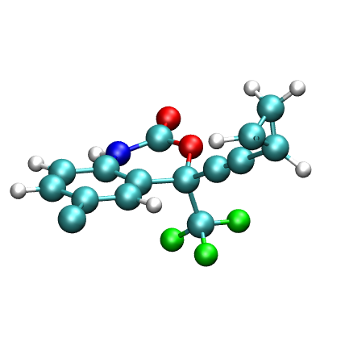
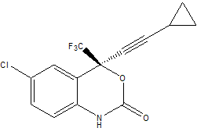

CTBP SUMMER SCHOOL 2009
ANTECHAMBER TUTORIAL
Using Antechamber to Create Leap Input Files for Simulating
Sustiva (efavirenz)-RT complex
using the General Amber Force Field
By Ross Walker and Sishi Tang

In this tutorial we will make use of the Antechamber tools, which ship with AmberTools, to create prmtop and inpcrd files for the simulations of a protein-ligand complex, and perform a short GB simulation on it.
Antechamber is designed to be used with the "general AMBER force field (GAFF)"1. This force field has been specifically designed to cover most pharmaceutical molecules and is compatible with the traditional AMBER force fields in such a way that the two can be mixed during a simulation. Like the traditional AMBER force fields, GAFF uses a simple harmonic function form for bonds and angles but unlike the traditional protein and DNA orientated AMBER force fields the atom types used in GAFF are much more general such that they cover most of the organic chemical space. The current implementation of the GAFF force field consists of 33 basic atom types and 22 special atom types. The charge methods used can be HF/6-31G* RESP2 or AM1-BCC3.
By design, GAFF, is a complete force field (so that missing parameters rarely occur), it covers almost all the organic chemical space that is made up of C, N, O, S, P, H, F, Cl, Br and I. Moreover, since GAFF is totally compatible with the AMBER macromolecular force fields it should prove to be an useful molecular mechanical tool for rational drug design. Especially in binding free energy calculations and molecular docking studies.
The Antechamber tool set is designed to allow the rapid generation of topology files for use with the AMBER simulation programs. This is useful in situations where you want to automatically screen a large number of compounds. Allowing antechamber to calculate charges and atom types automatically for us using GAFF allows it to be included in shell scripts that process a large number of compounds. However, as with any automated system it is not perfect and if you plan on focusing on a single system you should consider manually assigning atom types and carefully validating things. With Antechamber, one may solve the following problems:
Automatically identify bond and atom types
Judge atomic equivalence
Generate residue topology files
Find missing force field parameters and supply reasonable suggestions
Remember though that Antechamber is not a replacement for due diligence. You should always closely examine the atom types that Antechamber assigns and verify to yourself that the choices are reasonable. You should never use scientific software in a "Black Box" approach!
In this tutorial we shall use the Antechamber tools with Leap to create topology and coordinate files for the prescription drug Sustiva (Efavirenz). Sustiva (http://www.sustiva.com) is a human immunodeficiency virus type 1 (HIV-1) specific, non-nucleoside, reverse transcriptase inhibitor marketed by Bristol Myers Squibb for controlling the progression of HIV infection in humans. The chemical name for Sustiva is (S)-6-chloro-(cyclopropylethynyl)-1,4-dihydro-4-(trifluoromethyl)-2H-3,1-benzoxazin-2-one. Its empirical formula is C14H9ClF3NO2 and it's 2D structure is:
Here is a basic 3 dimensional geometry for Sustiva from which we will start to build our topology and coordinate files from sustiva.pdb. Our Sustiva pdb file is extracted from the RT-sustiva complex pdb file (pdb code : 1FKO.pdb). The coordinates of sustiva is associated with a residue called "EFZ" (Efavirenz).We shall use Antechamber to assign atom types to this molecule and also calculate a set of point charges for us. Antechamber is the most important program within the set of Antechamber tools. It can perform many file conversions and can also assign atomic charges and atom types. As required by the input antechamber executes the following programs (all provided with AmberTools): divcon, atomtype, am1bcc, bondtype, espgen, respgen and prepgen. It will also generate a series of intermediate files (all in capital letters).
Create parameter and coordinate files for SustivaFirst, let's run AMBER reduce to add all the hydrogen atoms to the pdb file. The hydrogenated sustiva coordinate can be found in sustiva_h.pdb.
$AMBERHOME/exe/reduce sustiva.pdb > sustiva_h.pdb
To be consistent with the name of pdb, we will change the name of the residue from "EFZ" to "SUS", and create a new pdb file: sustiva_new.pdb.
Now let's try using antechamber on our sustiva pdb file. To create the "mol2" file, required to define a new unit in leap, we simply run the following command:
$AMBERHOME/exe/antechamber -i sustiva_new.pdb -fi pdb -o sustiva.mol2 -fo mol2 -c bcc -s 2
Here the -i sustiva.pdb specifies the name of the 3D structure file and the -fi pdb tells antechamber that this is a pdb format file (we could easily have used any number of other supported formats including Gaussian Z-Matrix [gzmat], Gaussian Output [gout], MDL [mdl], amber Restart [rst], Sybyl Mol2 [mol2]). The -o sustiva.mol2 specifies the name of our output file and the -fo mol2 states that we want the output file to be of Tripos Mol2 format (this is an internal format supported by Leap). The -c bcc option tells antechamber to use the AM1-BCC charge model in order to calculate the atomic point charges while the -s 2 option defines the verbosity of the status information provided by antechamber. In this case we have selected verbose output (2).
So, go ahead and run the above command. The screen output should be as follows:
Running: /usr/local/amber10/bin/bondtype -j full -i ANTECHAMBER_BOND_TYPE.AC0 -o ANTECHAMBER_BOND_TYPE.AC -f ac |
You should also get a whole series of files written
to your directory.
ANTECHAMBER_AC.AC ANTECHAMBER_AM1BCC_PRE.AC ATOMTYPE.INF mopac.out sustiva.mol2 |
The files in CAPITALS are all intermediate files used by antechamber and are not required here. You can safely delete them. These files are not deleted by default since they may be of interest if things didn't work correctly. The mopac.xxx files are input and output from the mopac quantum mechanics code used by Antechamber to calculate the atomic point charges. We are not interested in the data here except to check that the mopac calculation completed successfully:
******************************************************************************* ** FRANK J. SEILER RES. LAB., U.S. AIR FORCE ACADEMY, COLO. SPGS., CO. 80840 ** ******************************************************************************* AM1 CALCULATION RESULTS ******************************************************************************* * MOPAC: VERSION 6.00 CALC'D. * GEO-OK - OVERRIDE INTERATOMIC DISTANCE CHECK * MMOK - APPLY MM CORRECTION TO CONH BARRIER * ANALYT - USE ANALYTIC DERIVATIVES * * * * CHARGE ON SYSTEM = 0 * * * * T= - A TIME OF 3600.0 SECONDS REQUESTED * DUMP=N - RESTART FILE WRITTEN EVERY 3600.0 SECONDS * AM1 - THE AM1 HAMILTONIAN TO BE USED * PRECISE - CRITERIA TO BE INCREASED BY 100 TIMES ***********************************************************************100BY100 AM1 ANALYT MMOK GEO-OK PRECISE CHARGE=0 created by wmopcrt() for mopac |
The file that we are really interested in, and the reason we ran Antechamber in the first place, is the sustiva.mol2 file. This contains the definition of our sustiva residue including all of the charges and atom types that we will load into Leap to when creating our prmtop and inpcrd files. Let's take a quick look at the file:
@<TRIPOS>MOLECULE SUS 30 32 1 0 0 SMALL bcc @<TRIPOS>ATOM 1 CL -4.6850 -32.7250 25.2220 cl 999 SUS -0.073100 2 F1 -0.7550 -36.6320 25.6970 f 999 SUS -0.231400 3 F2 1.0780 -37.0430 24.6720 f 999 SUS -0.221400 4 F3 -0.7840 -37.1770 23.6260 f 999 SUS -0.216800 5 O1 1.5240 -34.9340 20.9100 o 999 SUS -0.573600 6 O2 0.9890 -34.8800 23.0580 os 999 SUS -0.371900 7 N -0.6810 -34.9710 21.4340 n 999 SUS -0.459500 8 C1 -1.6620 -34.4140 22.3130 ca 999 SUS 0.084700 9 C2 -2.9150 -33.9470 21.8430 ca 999 SUS -0.167000 10 C3 -3.8380 -33.4230 22.7710 ca 999 SUS -0.069500 11 C4 -3.5330 -33.3730 24.1190 ca 999 SUS -0.025500 12 C5 -2.3100 -33.8290 24.5930 ca 999 SUS -0.040200 |
As you can see this file contains the 3 dimensional structure of our sustiva molecule as well as the charge on each atom, final column, the atom number (column 1), its name (column 2) and it's atom type (column 6). It also specifies the bonding at the end of the file. This file does not, however, contain any parameters. The GAFF parameters are all defined in $AMBERHOME/dat/leap/parm/gaff.dat. The other thing you should notice here is that all of the GAFF atom types are in lower case. This is the mechanism by which the GAFF force field is kept independent of the macromolecular AMBER force fields. All of the traditional AMBER force fields use uppercase atom types. In this way the GAFF and traditional force fields can be mixed in the same calculation.
While the most likely combinations of bond, angle and dihedral parameters are defined in the parameter file it is possible that our molecule might contain combinations of atom types for bonds, angles or dihedrals that have not been parameterised. If this is the case then we will have to specify any missing parameters before we can create our prmtop and inpcrd files in Leap.
We can use the utility parmchk to test if all the parameters we require are available.
$AMBERHOME/exe/parmchk -i sustiva.mol2 -f mol2 -o sustiva.frcmod
Run this command now and it will produce a file called sustiva.frcmod. This is a parameter file that can be loaded into Leap in order to add missing parameters. Here it will contain all of the missing parameters. If it can antechamber will fill in these missing parameters by analogy to a similar parameter. You should check these parameters carefully before running a simulation. If antechamber can't empirically calculate a value or has no analogy it will either add a default value that it thinks is reasonable or alternatively insert a place holder (with zeros everywhere) and the comment "ATTN: needs revision". In this case you will have to manually parameterise this yourself. It is hope that as GAFF is developed so the number of missing parameters will decrease. Let's look at our frcmod file:
remark goes here |
We can see that there were a total of 4 missing angle parameters and 4 missing improper dihedrals. For the purposes of this tutorial we shall assume that the parameters Antechamber has suggested for us are acceptable. Ideally you should really test these parameters (by comparing to ab initio calculations for example) to ensure they are reasonable. If you see any parameters listed with the comment "ATTN: NEEDS REVISION" then it means that Antechamber could not determine suitable parameters and so you must manually provide these before you can proceed with the simulation. By default Antechamber will have set the values to zero.
We now have everything we need to load sustiva as a unit in Leap. We just need to load tLeap and ensure the GAFF force field is available. (First, download an updated version of tleap, and place it in /opt/bin/amber11/bin.)
$AMBERHOME/exe/tleap -f $AMBERHOME/dat/leap/cmd/leaprc.ff99SB
Once tleap is up and running we also need to ensure that it knows about the GAFF force field. There is a script in $AMBERHOME/dat/leap/cmd/ that will do this for us. We can load it into tLeap with:
source leaprc.gaff
Our tLeap console should now look something like this:
| Welcome to LEaP! (no leaprc in search path) Sourcing: /usr/local/amber10/dat/leap/cmd/leaprc.ff99SB Log file: ./leap.log Loading parameters: /usr/local/amber10/dat/leap/parm/parm99.dat Reading title: PARM99 for DNA,RNA,AA, organic molecules, TIP3P wat. Polariz.& LP incl.02/04/99 Loading parameters: /usr/local/amber10/dat/leap/parm/frcmod.ff99SB Reading force field modification type file (frcmod) Reading title: Modification/update of parm99.dat (Hornak & Simmerling) Loading library: /usr/local/amber10/dat/leap/lib/all_nucleic94.lib Loading library: /usr/local/amber10/dat/leap/lib/all_amino94.lib Loading library: /usr/local/amber10/dat/leap/lib/all_aminoct94.lib Loading library: /usr/local/amber10/dat/leap/lib/all_aminont94.lib Loading library: /usr/local/amber10/dat/leap/lib/ions94.lib Loading library: /usr/local/amber10/dat/leap/lib/solvents.lib > source leaprc.gaff ----- Source: /usr/local/amber10/dat/leap/cmd/leaprc.gaff ----- Source of /usr/local/amber10/dat/leap/cmd/leaprc.gaff done Log file: ./leap.log Loading parameters: /usr/local/amber10/dat/leap/parm/gaff.dat Reading title: AMBER General Force Field for organic mol., add. info. at the end (June, 2003) > |
Now we can load our sustiva unit (sustiva.mol2):
SUS = loadmol2 sustiva.mol2
If you now type list in tLeap you should see the new SUS unit (highlighted in bold):
| > SUS = loadmol2 sustiva.mol2 Loading Mol2 file: ./sustiva.mol2 Reading MOLECULE named SUS > list ACE ALA ARG ASH ASN ASP CALA CARG CASN CASP CCYS CCYX CGLN CGLU CGLY CHCL3BOX CHID CHIE CHIP CHIS CILE CIO CLEU CLYS CMET CPHE CPRO CSER CTHR CTRP CTYR CVAL CYM CYS CYX Cl- Cs+ DA DA3 DA5 DAN DC DC3 DC4 DC5 DCN DG DG3 DG5 DGN DT DT3 DT5 DTN GLH GLN GLU GLY HID HIE HIP HIS HOH IB ILE K+ LEU LYN LYS Li+ MEOHBOX MET MG2 NALA NARG NASN NASP NCYS NCYX NGLN NGLU NGLY NHE NHID NHIE NHIP NHIS NILE NLEU NLYS NMABOX NME NMET NPHE NPRO NSER NTHR NTRP NTYR NVAL Na+ PHE PL3 POL3BOX PRO QSPCFWBOX RA RA3 RA5 RAN RC RC3 RC5 RCN RG RG3 RG5 RGN RU RU3 RU5 RUN Rb+ SER SPC SPCBOX SPCFWBOX SPF SPG SUS T4E THR TIP3PBOX TIP3PFBOX TIP4PBOX TIP4PEWBOX TP3 TP4 TP5 TPF TRP TYR VAL WAT frcmod99SBgaff parm99 |
At this point we haven't loaded the frcmod file that parmchk gave us. Thus if we check our SUS unit we should find that there are 4 missing angle type parameters.
check SUS
| > check SUS Checking 'SUS'.... Checking parameters for unit 'SUS'. Checking for bond parameters. Checking for angle parameters. Could not find angle parameter: ca - c3 - c1 Could not find angle parameter: c1 - c1 - cx Could not find angle parameter: c1 - cx - hc Could not find angle parameter: c1 - cx - cx Could not find angle parameter: c1 - cx - cx There are missing parameters. Unit is OK. |
Our missing angle type parameters were ca-c3-c1, c1-c1-cx, c1-cx-hc and c1-cx-cx. These correspond to the propyl ring and the c-c triple bond. This is what we would expect since this type of system is fairly rare in organic molecules. We can now load our frcmod file in order to tell tLeap the parameters for these missing angle types.
loadamberparams sustiva.frcmod
If we now check out SUS unit we should find that there are no missing parameters:
| > loadamberparams sustiva.frcmod loading parameters: ./sustiva.frcmod Reading force field modification type file (frcmod) Reading title: remark goes here > check SUS Checking 'SUS'.... Checking parameters for unit 'SUS'. Checking for bond parameters. Checking for angle parameters. Unit is OK. |
We can now create the library file for sustiva (sus.lib), as well as the prmtop and inpcrd files (sustiva.prmtop, sustiva.inpcrd).
saveoff SUS sus.lib
saveamberparm SUS sustiva.prmtop sustiva.inpcrd
The output from tleap shows a few warnings, which can be safely ignored (in this case!) due to the triangular bond geometry of sustiva:
| > saveoff SUS sus.lib Building topology. Building atom parameters. > > saveamberparm SUS sustiva.prmtop sustiva.inpcrd Checking Unit. Building topology. Building atom parameters. Building bond parameters. Building angle parameters. Building proper torsion parameters. 1-4: angle 7 12 duplicates bond ('triangular' bond) or angle ('square' bond) 1-4: angle 7 9 duplicates bond ('triangular' bond) or angle ('square' bond) 1-4: angle 9 12 duplicates bond ('triangular' bond) or angle ('square' bond) Building improper torsion parameters. total 8 improper torsions applied Building H-Bond parameters. Not Marking per-residue atom chain types. Marking per-residue atom chain types. (Residues lacking connect0/connect1 - these don't have chain types marked: res total affected SUS 1 ) (no restraints) > |
Instead of typing everything in the tleap console, the list of tLeap commands mentioned above can also be used to create a tLeap input file (tleap.in) and generate all the required files:
$AMBERHOME/exe/tleap -f tleap.in
Creating topology and coordinate files for Sustiva-RT complex
Since we can mix the traditional AMBER force fields with GAFF, we can at this point load a fragment of the reverse transcriptase (RT) from HIV virus and treat this using the ff99SB force field while treating the Sustiva molecule using the GAFF force field. We will need to use the Sustiva library file (sus.lib) that was created in the previous step.
The RT-Sustiva complex can be found in the RCSB protein data bank (pdb code 1FKO). The corresponding pdb file is 1FKO.pdb.
HIV reverse transcriptase is a heterodimer composed of the p51 and p66 subunits. It is a large protein with a molecular mass of 117 kDa. For the purpose of this tutorial, we will use a truncated system in close proximity of Sustiva, including the finger and palm domains of the p66 subunit. The truncated pdb file is: 1FKO_trunc.pdb.
In order to have the 1FKO pdb file recognized by tLeap once the Sustiva library file is loaded, we need to change the residue name in the 1FKO pdb file from EFZ to SUS. Since the Sustiva libary file includes the same atom names as the Sustiva molecule in the 1FKO pdb file, no further modification is necessary. In other cases it is always a good idea to check the pdb file against the library file to make sure they have matching atom names as well as residue name. The modified pdb file is now: 1FKO_trunc_sus.pdbNow we are able to load the pdb file into tLeap.
First, we start tLeap just like what we did in the previous section:
$AMBERHOME/exe/tleap -f $AMBERHOME/dat/leap/cmd/leaprc.ff99SB
>source leaprc.gaff
>loadamberparams sustiva.frcmod
Now we load the Sustiva library file (sus.lib), followed by the complex pdb file 1FKO_trunc_sus.pdb.
>loadoff sus.lib
>complex = loadpdb 1FKO_trunc_sus.pdb
Finally, we are ready to create our topology and coordinate files of the truncated RT-sustiva complex.Again we can create a tLeap input file (tleap2.in) and generate all the files for the Sustiva-RT complex:
$AMBERHOME/exe/tleap -f tleap2.in
Minimize and Equilibrate the Sustiva-RT complexOnce we have the topology and coordinate files of RT-Sustiva complex, we are ready to run short GB simulations on Sustiva-RT. Note, the procedure given here is very short in order to make the simulations compatible with the timescale of this tutorial. In a real "production" simulation you would typically run a much longer simulation (ns) in order to obtain good statistical convergence.
First, we will minimize our complex to remove any possible bad contacts. Here's our input file min.in. We will do a total of 200 steps of minimization (MAXCYC) with the first 50 being steepest descent (NCYC), the remainder will be conjugate gradient (MAXCYC-NCYC). We will use a reasonably large cut off of 16 Angstroms since this is not going to be a periodic simulation and we want to deal with our electrostatics accurately (NTB=0,CUT=16). For our implicit solvent model we will use the GB model of Hawkins, Cramer and Truhlar, see the AMBER manual for a full description (IGB=1):| Initial minimisation of sustiva-RT complex &cntrl imin=1, maxcyc=200, ncyc=50, cut=16, ntb=0, igb=1, &end |
$AMBERHOME/exe/sander -O -i min.in -o 1FKO_sus_min.out -p 1FKO_sus.prmtop -c 1FKO_sus.inpcrd -r 1FKO_sus_min.crd &
You can use ambpdb to generate a pdb of the final minimized structures if you want:
$AMBERHOME/exe/ambpdb -p 1FKO_sus.prmtop <1FKO_sus_min.crd > 1FKO_sus_min.pdb
It is always a good idea to visualize your results since the human eye is very good at spotting anormolies.
The next step if to heat the RT-Sustiva complex. For speed we will do this very rapidly over 1ps. Ideally you should do this for much longer.
Here's our input file, we will run MD (imin=0) and this is not a restart (irest=0). In this example we will not use shake since it is possible that the hydrogen motion may effect the binding energy (probably not, but it serves as an example here). As we are not using shake we will need a time step smaller than normal. Here I will use a time step of 1 fs and run for 1000 steps [2 ps] (dt = 0.001, nstlim=1000, ntc=1). We will also write to our output file every 20 steps and to our trajectory [mdcrd] file every 20 steps (ntpr=20,ntwx=20). For temperature control we will use a Langevin dynamics approach with a collision frequency of 1 ps^-1. We will start our system at 0K and we want a target temperature of 300K (ntt=3, gamma_ln=1.0, tempi=0.0, temp0=300.0). And here's the input file: eq.in
| eq.in Initial MD equilibration &cntrl imin=0, irest=0, nstlim=1000,dt=0.001, ntc=1, ntpr=20, ntwx=20, cut=16, ntb=0, igb=1, ntt=3, gamma_ln=1.0, tempi=0.0, temp0=300.0, &end |
$AMBERHOME/exe/sander -O -i eq.in -o 1FKO_sus_eq.out -p 1FKO_sus.prmtop -c 1FKO_sus_min.crd -r 1FKO_sus_eq.rst -x 1FKO_sus_eq.mdcrd &
The heating trajectory and restart coordinates are saved in 1FKO_sus_eq.mdcrd and 1FKO_sus_eq.rst, respectively. Now that the sustiva-RT complex is minimized and heated, you can take a look at the snapshot at 300K. This structure can be used as the starting point for further equilibration.1Wang, J., Wolf, R.M., Caldwell, J.W., Kollman, P.A., Case, D.A. "Development and Testing of a General Amber Force Field", J. Comp. Chem., 2004, 25, 1157 - 1173.
2Bayly, C.I., Cieplak, P., Cornell, W.D., Kollman, P.A. "A Well-Behaved Electrostatic Potential Based Method Using Charge Restraints for Deriving Atomic Charges : The RESP Model", J. Phys. Chem, 1993, 10269-10280.
3Jakalian, A., Bush, B.L., Jack, B.D., Bayly, C.I., "Fast, Efficient Generation of High-Quality Atomic Charges. AM1-BCC Model: I. Method.", J. Comp. Chem., 2000, 21, 132-146.